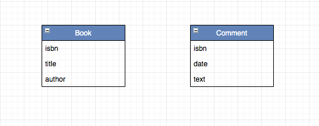

Le but est de créer un nouvelle application
Pour aller plus vite, nous avons utilisé une base mongo dans le cloud.
Ici, nous allons installer la base en local.
➤ Installez mongodb community
Le but est de créer une app Bookshelf pour la gestion de livres.
Le modèle de données est constitué de livres et de commentaires
Les services doivent permettre de lire en base.
Voici une première liste de services souhaités :
L'International Standard Book Number (ISBN) ou Numéro international normalisé du livre est un numéro internationalement reconnu, créé en 1970, identifiant de manière unique chaque édition de chaque livre publié1,2 postérieurement à l’introduction de l’ISBN, quel que soit son support3. Cet identifiant pérenne est destiné à simplifier la gestion pour tous les intervenants de la chaîne du livre (éditeurs, imprimeurs, grossistes, libraires, bibliothèques). En 2007, le numéro ISBN est passé de 10 à 13 chiffres pour compatibilité avec le code-produit GTIN-134, base du code-barre universellement utilisé dans la distribution.
Par exemple : 978-2-35000-455-6
➤ Initialisez un projet spring boot avec les dépendances nécessaires.
➤ Configurez la connexion à la base.
➤ Créez le modèle de données, les repositories...
➤ Ajoutez un service /reset afin de vider et remplir la base avec un jeu de données
➤ Ajoutez les services sur les controllers un par un en passant par des tests
➤ Ajoutez les fonctionnalités suivantes
➤ Peut on imaginer d'autres services ?
home{kind=link}